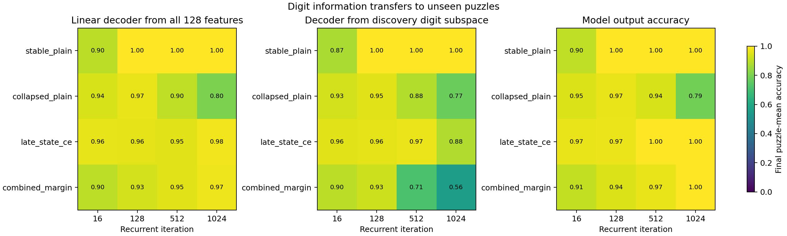
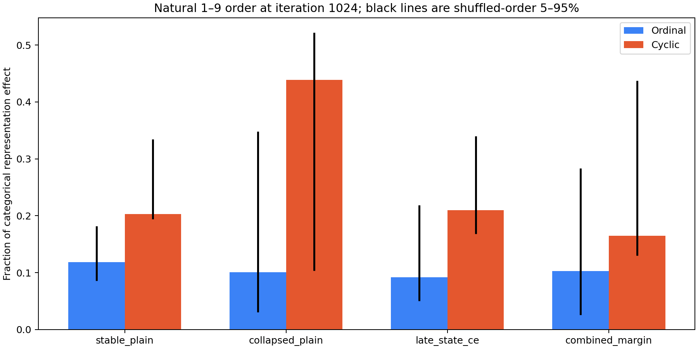
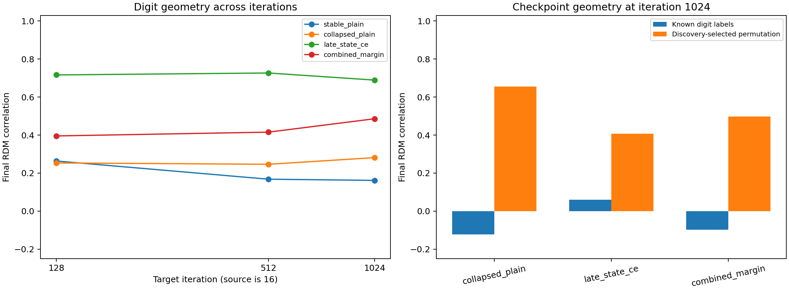
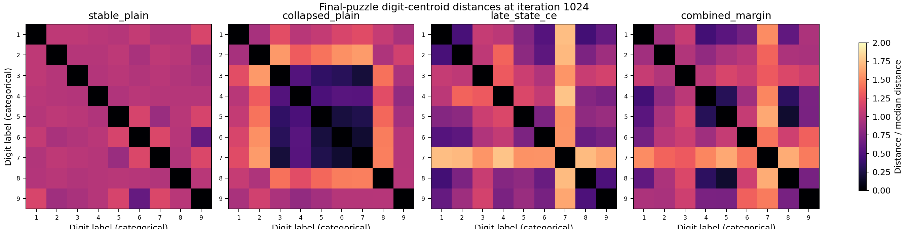

All reported numbers below evaluate projections fitted on discovery puzzles on the final puzzle split.




| Checkpoint | Iteration | Decoder accuracy | Ordinal fraction | Ordinal percentile | Cyclic fraction | Cyclic percentile |
|---|---|---|---|---|---|---|
| stable_plain | 16 | 0.898 | 0.127 | 0.673 | 0.252 | 0.688 |
| stable_plain | 128 | 1.000 | 0.125 | 0.663 | 0.227 | 0.171 |
| stable_plain | 512 | 1.000 | 0.120 | 0.608 | 0.209 | 0.141 |
| stable_plain | 1024 | 1.000 | 0.118 | 0.568 | 0.203 | 0.126 |
| collapsed_plain | 16 | 0.941 | 0.134 | 0.849 | 0.254 | 0.693 |
| collapsed_plain | 128 | 0.966 | 0.125 | 0.623 | 0.381 | 0.930 |
| collapsed_plain | 512 | 0.903 | 0.118 | 0.593 | 0.456 | 0.925 |
| collapsed_plain | 1024 | 0.804 | 0.101 | 0.553 | 0.439 | 0.894 |
| late_state_ce | 16 | 0.962 | 0.131 | 0.739 | 0.257 | 0.819 |
| late_state_ce | 128 | 0.961 | 0.127 | 0.492 | 0.237 | 0.312 |
| late_state_ce | 512 | 0.954 | 0.100 | 0.317 | 0.207 | 0.166 |
| late_state_ce | 1024 | 0.978 | 0.092 | 0.317 | 0.210 | 0.261 |
| combined_margin | 16 | 0.901 | 0.125 | 0.487 | 0.257 | 0.849 |
| combined_margin | 128 | 0.932 | 0.143 | 0.819 | 0.234 | 0.276 |
| combined_margin | 512 | 0.954 | 0.123 | 0.568 | 0.186 | 0.216 |
| combined_margin | 1024 | 0.975 | 0.103 | 0.447 | 0.165 | 0.161 |